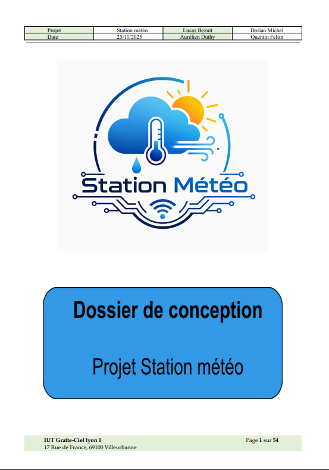
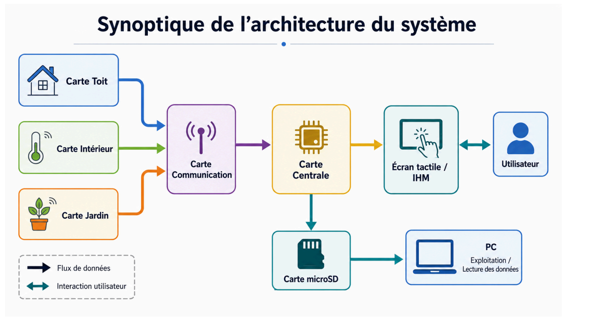
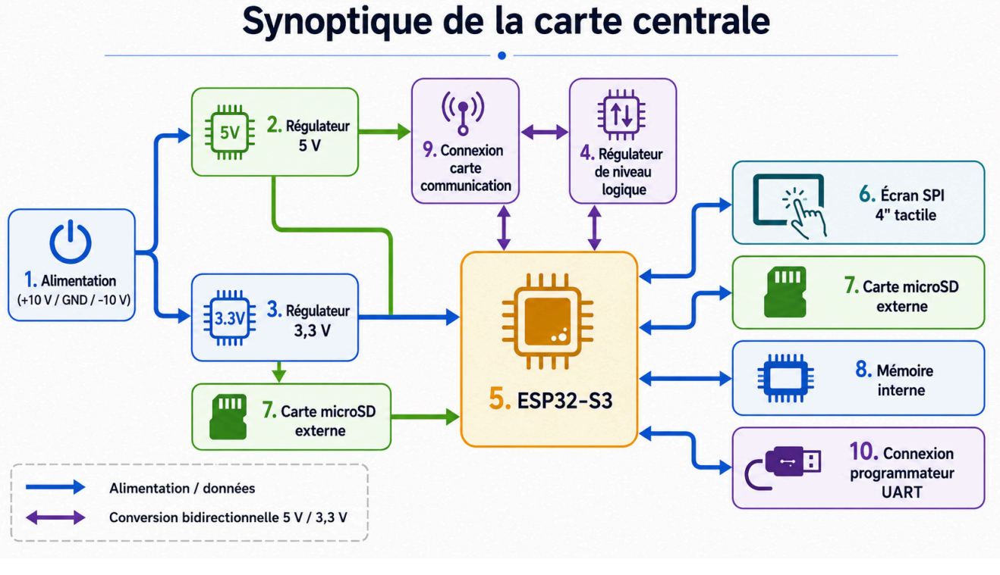
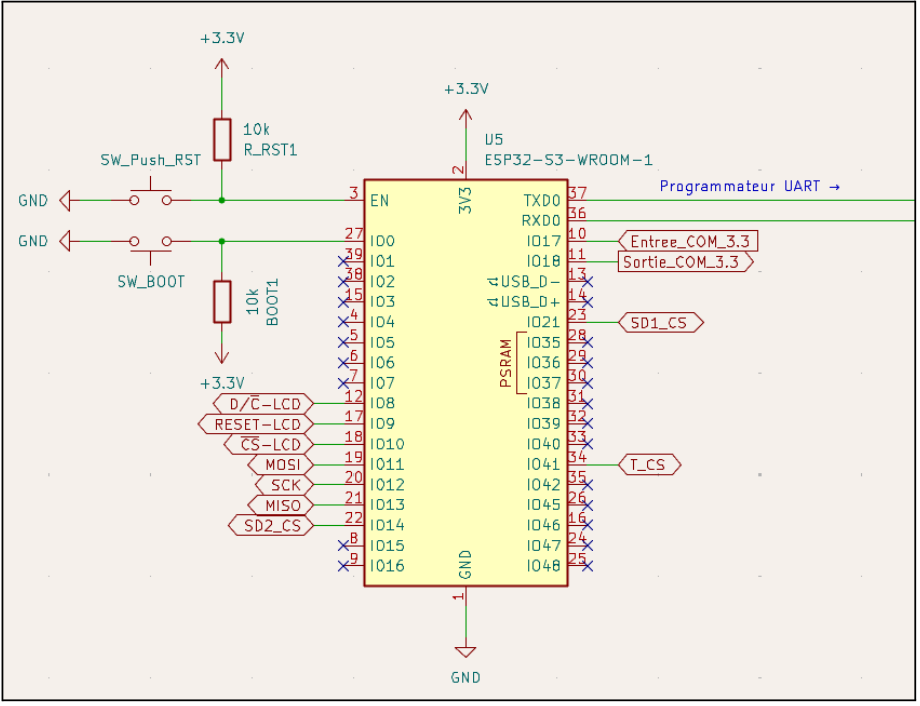
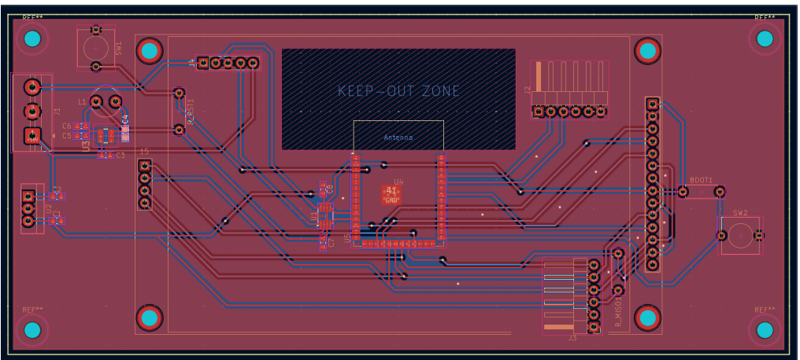

Dans le cadre du projet de station météo connectée, j’ai rédigé et structuré
la partie concernant la carte centrale. Cette partie présente les choix techniques,
l’architecture électronique, les schémas, le routage et l’organisation logicielle
du système.
Contexte du projet
Le projet consiste à concevoir une station météo connectée modulaire composée
de plusieurs cartes : une carte toit, une carte jardin, une carte intérieure,
une carte de communication et une carte centrale.
La carte centrale est l’élément principal du point de vue utilisateur. Elle reçoit
les données envoyées par les différents modules, les affiche sur une interface tactile
et permet leur sauvegarde afin de conserver un historique exploitable.
Ma contribution principale :
rédiger la partie du dossier de conception liée à la carte centrale, en expliquant
les choix matériels, les contraintes techniques, le fonctionnement prévu et les
solutions retenues.
Document associé
Le dossier de conception complet présente l’ensemble du projet station météo.
La partie carte centrale détaille l’architecture matérielle et logicielle dont
j’ai eu la charge.

Aperçu de la page de garde du dossier de conception
La carte centrale a pour objectif de coordonner les échanges entre les différents
modules de mesure et de centraliser les informations reçues. Elle doit rendre
les données directement accessibles à l’utilisateur.
Réception des données : récupération des mesures envoyées
par les cartes Toit, Jardin et Intérieur.
Affichage : présentation claire des valeurs sur un écran tactile.
Sauvegarde : enregistrement des mesures pour conserver
un historique.
Exploitation externe : données stockées dans un format simple,
comme le CSV, afin d’être lues sur ordinateur.
Choix d’architecture
Pour la carte centrale, j’ai choisi une architecture basée sur un
ESP32-S3-WROOM-1 associé à un écran SPI tactile de 4 pouces.
Ce choix permet d’obtenir une interface plus lisible qu’avec un module compact
de type M5Stack, tout en conservant les avantages de la famille ESP32.
Objectif de conception :
proposer une carte centrale capable de gérer l’IHM, la communication,
le stockage des données et les futures évolutions du projet.
Conception électronique
Dans le dossier de conception, j’ai détaillé les différents blocs électroniques
nécessaires au fonctionnement de la carte centrale. Chaque choix est expliqué
en fonction du besoin technique et des contraintes du projet.
arrivée d’alimentation en +10 V, GND et -10 V ;
régulation 5 V avec un L7805 ;
régulation 3,3 V avec un AP63203 ;
adaptation des niveaux logiques avec un TXS0102DCT ;
intégration de l’ESP32-S3 ;
connexion de l’écran tactile SPI ;
gestion des mémoires microSD ;
connecteur UART pour la programmation.
Contraintes prises en compte
La rédaction du dossier devait expliquer les contraintes rencontrées pendant
la conception, notamment les différences de niveaux logiques entre les éléments,
le partage du bus SPI entre plusieurs périphériques et le besoin d’une alimentation
stable pour l’ESP32-S3.
Les choix retenus ont été justifiés afin que le dossier soit compréhensible,
exploitable et cohérent avec le cahier des charges du projet.
Partie logicielle
Le dossier présente également l’organisation logicielle de la carte centrale.
Le programme est structuré pour gérer l’affichage, l’interaction tactile,
la réception des données et leur sauvegarde sur carte SD.
L’interface homme-machine a été pensée sous forme de maquette afin de définir
les différentes pages : accueil, intérieur, jardin, toit et carte SD. Chaque page
reprend une organisation similaire pour faciliter l’utilisation par l’utilisateur.
Dossier de conceptionCarte centraleESP32-S3Écran tactileKiCadMicroSDIHM
Preuves et illustrations
Pour illustrer cette compétence, plusieurs éléments du dossier peuvent être
utilisés : le synoptique de l’architecture générale, le synoptique de la carte centrale,
les schémas électroniques et le routage réalisé sous KiCad.

Synoptique de l’architecture générale : représentation des échanges
entre les cartes de mesure, la carte de communication, la carte centrale,
l’écran tactile, la carte microSD et l’utilisateur.

Synoptique de la carte centrale : présentation des blocs principaux
de la carte, des alimentations, de l’ESP32-S3, de l’écran, de la mémoire
et des communications.

Schéma ESP32-S3 : extrait du dossier montrant l’intégration
du microcontrôleur principal et des boutons nécessaires à la programmation.

Routage KiCad : preuve de la conception PCB de la carte centrale,
avec le placement des composants et le routage des signaux.
Ce que montre le dossier
La partie carte centrale du dossier ne se limite pas à une simple description.
Elle explique le rôle du système, les fonctions attendues, les choix de composants,
les raisons techniques de ces choix et la manière dont les différentes parties
communiquent entre elles.
Cette rédaction permet de montrer que la conception est structurée, détaillée
et cohérente avec le cahier des charges : chaque bloc de la carte centrale possède
une fonction claire et une justification technique.
Bilan personnel
Cette compétence m’a permis d’apprendre à formaliser un travail de conception
technique dans un document structuré. J’ai dû expliquer mes choix, présenter
les schémas, organiser les informations et rendre le dossier compréhensible
pour une personne extérieure au projet.
La rédaction de la partie carte centrale illustre donc directement la compétence
C1.3 – Rédiger un dossier de conception, car elle regroupe les éléments
nécessaires pour comprendre la conception matérielle et logicielle d’un sous-système
complet de la station météo.
Projet station météo – BUT GEII / Parcours ESE – Carte centrale